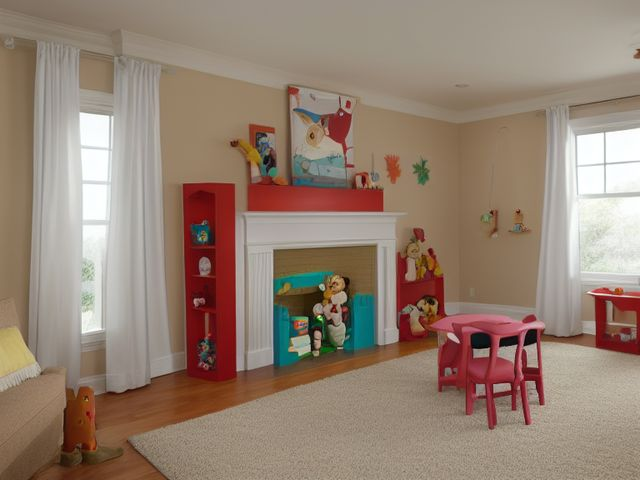

Family Room micro zone
The Toy and Play Zone
Hold the toys that are in active rotation, at a height and in a form where a child can put them away without an adult.
One session: 60-90 min. most of it in Sort, once every bin is tipped out onto the mat

What done looks like
Five or six open bins with no lids on the lowest shelf, one category each, a photo of the contents taped to the front face where a child looking down sees it, the play mat rolled against the wall, and enough clear floor that two children can build without moving anything first.
Check these before you start
- Poison, choke, or strangleMarbles, small figure accessories, and the wheels that snap off toy vehicles land on a floor a crawling child also uses. Anything that fits through a toilet paper tube does not belong in a floor-height bin here.
- Fall, cut, or crushCracked hard plastic makes edges sharp enough to cut a knee, and a low shelf loaded heavy at the top will come over when a toddler pulls themselves up on it.
The six passes, in order
Work them in this order. Sorting after you have arranged things means arranging things you were about to remove.
Sort
Decide what stays. Everything else leaves the zone now.
Tip every bin out onto the mat and make four piles: played with this month, broken, missing its other half, and outgrown. Anything with a cracked seam, a corroded battery compartment, or a missing wheel gets repaired today or leaves today, because it will not get repaired later.
Straighten
Give what stays a home, placed where the hand actually reaches.
One category per open bin, no lids, all on the lowest shelf: blocks, vehicles, dolls and figures, pretend food, art toys. A lid is one more step than a four-year-old will take at the end of a play session.
Shine
Clean it, and use the cleaning to inspect what you cannot see when it is full.
Wash hard plastic toys in mild soapy water and dry them fully, because a damp block goes back into a closed bin and stays damp. Fabric dolls and soft blocks go through the machine in a wash bag, and the play mat gets lifted so you can vacuum the crumbs underneath it.
Safety
Make the zone safe for everybody who uses it, including the shortest person.
For any child under three in the house, hold each small part against the middle of a toilet paper tube. If it passes through, that toy belongs in the older child's room, not in a bin at floor height in the shared room. Keep the tallest bin below the child's shoulder so nothing gets pulled down onto a face.
Standardize
Write down the best way you know today, so it survives you forgetting.
Photo labels on the bin fronts, and one printed picture of the finished shelf taped at child eye height on the wall beside it. Match the picture is an instruction a five-year-old can follow without an adult refereeing.
Sustain
Attach the reset to something that already happens, so it keeps itself.
When the bedtime story is announced, the floor gets cleared first, and the story starts when the mat is empty.
The gift nobody plays with
There is a large, loud, expensive thing in this room that a relative gave, and no child has chosen it unprompted in months. You keep it because of the giver, and every time you sort this zone you move it two feet and put it back. The rule that settles this: the shelf belongs to the child, not to the giver. Run one honest week, touch nothing, and watch whether any child reaches for it without being pointed at it. If none does, it goes. If you are genuinely worried about being asked, take one photograph of the child playing with it, send that photo to the person who gave it, then donate it while the good will is intact. Keeping an unloved toy on the lowest shelf does not honour anybody. It costs a bin that a favourite toy currently does not have.
Cleaning it properly
Everything here goes in a small mouth or under a bare knee, so clean means genuinely clean and genuinely dry. Work from the top of the shelf down to the mat, and lift the mat, because that is where the crumbs hide.
Inspect as you clean. Cleaning is the only time you see the zone empty, so use it.
- A cracked hard plastic edge sharp enough to catch a knee, and any toy piece that has split or snapped.
- A small part or a wheel snapped off a vehicle found loose on the floor, which is choke sized on a floor a crawler shares.
- A soft, stained, or musty base inside a bin where a wet toy went back damp, an early sign of mildew.
- A shelf that rocks, or a bracket you feel move, when you lift the mat or a bin past it.
- A photo label peeling or faded off a bin front so the category no longer reads.
The standard that keeps it fixed
Five or six open bins on the lowest shelf, one category each, picture labels on the front face, nothing above shoulder height, and the overflow toys waiting in labeled bins in a closet rather than on this shelf.
Reset trigger. When the bedtime story is announced.
Next in this room
- The Primary Media Zone, the zone before this one
- The Board Game and Puzzle Zone, the zone after this one
- All 6 micro zones in the Family Room
Related reading
- What is 6S?
- This zone's safety pass, in full
- Is one spot in this zone always the one you skip?
- Why this zone gets messy again
- Decluttering vs. organizing
- Before you buy storage for this zone
- Still does not fit, even after the honest count?
- Does something in this zone actually get used somewhere else?
- Stuck on one item in this zone?
- Written the standard, but nobody else follows it?
- Does everyone in the house agree what "done" looks like here?
- Does more than one person use this zone?
- Found a duplicate of something in this zone?
- Why the standard above names one home per category
- Is the everyday item in this zone actually the easy one to reach?
- Not sure whether to keep something in this zone?
- Does this zone keep running out of something?
- Started this zone and stalled partway through?
- Have you stopped noticing the clutter in this zone?
When you want it off the screen
Carry The Toy and Play Zone into the room
The method above is complete and free. The Whole House Print Pack puts The Toy and Play Zone and the other 113 micro zones on 684 printable cards, so the steps you just read are not stuck behind a phone screen while your hands are full.
The Print Pack, 19 dollarsJust this zone, 4 dollarsOr draw a card free
The Toy and Play Zone on its own is 4 dollars for 6 cards. All 114 micro zones is 19 dollars for 684. The whole house is the better buy; the single zone is here so you can take only what you are working on.
If The Toy and Play Zone keeps fighting back, the real problem usually sits somewhere else in the room. A one hour virtual consult is 250 dollars: we find the function, the friction and the root cause together, and you keep a written standard for the space. See what a consult covers.